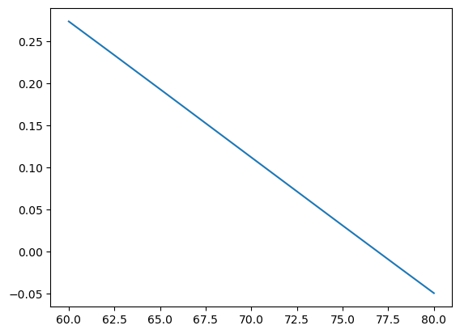

import sympy as sp
#import sympy_plot_backends as spb
x=sp.Symbol('x',real=True)
mu=sp.Piecewise((0.05,x<=30),(0.02,x>30))
beta=sp.Piecewise((0,x<=15),(0.04,x<=60),(0.02,x>60))
alpha = 0.01
F=mu*sp.exp(-alpha*x)-beta
# Graficar la función
sp.plot(F,(x,0,200))
# solucion de un edo
y = sp.Function('y')
result = sp.dsolve(sp.Derivative(y(x), x) -F)Untitled
g=sp.integrate(F,x)\(\displaystyle \begin{cases} - 5.0 e^{- 0.01 x} & \text{for}\: x \leq 15 \\- 0.04 x + 0.6 - 5.0 e^{- 0.01 x} & \text{for}\: x \leq 30 \\- 0.04 x - 1.62245466204515 - 2.0 e^{- 0.01 x} & \text{for}\: x \leq 60 \\- 0.02 x - 2.82245466204515 - 2.0 e^{- 0.01 x} & \text{otherwise} \end{cases}\)
result\(\displaystyle y{\left(x \right)} = C_{1} + \begin{cases} - 5.0 e^{- 0.01 x} & \text{for}\: x \leq 15.0 \\- 0.04 x + 0.6 - 5.0 e^{- 0.01 x} & \text{for}\: x \leq 30.0 \\- 0.04 x - 1.62245466204515 - 2.0 e^{- 0.01 x} & \text{for}\: x \leq 60.0 \\- 0.02 x - 2.82245466204515 - 2.0 e^{- 0.01 x} & \text{otherwise} \end{cases}\)
result = sp.dsolve(sp.Derivative(y(x), x) -y(x)*F,ics={y(0):2}, hint='separable_reduced')result[Eq(y(x), Piecewise((C1*exp(-0.04*x - 5.0*exp(-0.01*x)), (x <= 30.0) & (x > 15.0)), (nan, True))),
Eq(y(x), Piecewise((C1*exp(-0.04*x - 2.0*exp(-0.01*x)), (x <= 60.0) & (x > 30.0)), (nan, True))),
Eq(y(x), Piecewise((C1*exp(-0.02*x - 2.0*exp(-0.01*x)), x > 60.0), (nan, True))),
Eq(y(x), Piecewise((C1*exp(-5.0*exp(-0.01*x)), x <= 15.0), (nan, True)))]Analytical solution:
Let the differential equation:
\[\frac{dV}{dt} = F(t,V)\] where \[F(t,V)=\big(\mu(v) e^{-\alpha t}-\beta(t)\big)V\] and \[\mu(t) = \begin{cases} 0.05, & \text{si } t < 30 \text{ días} \\ 0.02, & \text{si } t \geq 30 \text{ días} \end{cases}\]
\[\beta(t) = \begin{cases} 0, & \text{si } t < 15 \text{ días} \\ 0.04, & \text{si } 15 \text{ días} \leq t < 60 \text{ días} \\ 0.02, & \text{si } t \geq 60 \text{ días} \end{cases}\]
\[\mu(t) = \begin{cases} 0.05, & \text{si } t < 30 \text{ días} \\ 0.02, & \text{si } t \geq 30 \text{ días} \end{cases}\]
\[\beta(t) = \begin{cases} 0, & \text{si } t < 15 \text{ días} \\ 0.04, & \text{si } 15 \text{ días} \leq t < 60 \text{ días} \\ 0.02, & \text{si } t \geq 60 \text{ días} \end{cases}\]
with the initial condition \(V(0)=2\). We can solve this equation by separation of variables, and we need to calculate the solution for intervals \(([0,15],[15,30],[30,60],[60,\infty])\).
First, we solve the equation for the interval \([0,15]\). We have:
\[\frac{dV}{dt} = \Big(\mu(t) \exp(-\alpha t) - \beta(t) \Big)V\] \[\frac{dV}{V} = \Big(\mu(t) \exp(-\alpha t) - \beta(t) \Big)dt\]
NOTE that \(\mu(t)\) and \(\beta(t)\) are constants in this interval. Thus \[\ln(V) = \frac{\mu \exp(-\alpha t)}{-\alpha} - \beta t +C_1\] \[V= \exp\Big(\frac{\mu \exp(-\alpha t)}{-\alpha} - \beta t +C_1\Big)\] \[V= C\exp\Big(\frac{\mu}{-\alpha} \exp(-\alpha t) - \beta t\Big)\]
we using the initial condition \(V(0)=2\) we have \[V(0) = C\exp\Big(\frac{-\mu }{\alpha} \Big)\] \[2 = C\exp\Big(\frac{-\mu}{\alpha}\Big)\] \[C = 2\exp\Big(\frac{\mu}{\alpha}\Big)\]
Then, we have \[C=296.8263\]
Thus, the solution for the interval \([0,15]\) is \[V(t) = 296.8263\exp\Big(\frac{\mu}{-\alpha} \exp(-\alpha t)\Big)\] and \(V(15)=296.8263\exp\Big(\frac{\mu}{-\alpha} \exp(-\alpha 15)\Big)=4.0132\)
we calculated the general solution for the interval \([0,15]\), now we need to calculate the solution for the interval \([15,30]\). We have: \[V= C_2\exp\Big(\frac{\mu}{-\alpha} \exp(-\alpha t) - \beta t\Big)\] \[C_2=V\exp\Big(\beta t + \frac{\mu}{\alpha} \exp(-\alpha t)\Big)\]
with the initial condition \(V(15)=4.0132\), \(\mu=0.05\), \(\beta=0.04\) and \(\alpha=0.01\) we have
\[C_2 = 540.8428\]
Now, we can calculate the solution for the interval \([15,30]\). We have: \[V(t) = C_2\exp\Big(\frac{\mu}{-\alpha} \exp(-\alpha t) - \beta t\Big)\] \[V(30)=4.01106\]
Now we need to calculate the solution for the interval \([30,60]\). We have: \[C_2=V\exp\Big(\beta t + \frac{\mu}{\alpha} \exp(-\alpha t)\Big)\] with the initial condition \(V(30)=4.01106\), \(\mu=0.02\), \(\beta=0.04\) and \(\alpha=0.01\) we have \[C_3=58.59752\] and
\[V(60)=1.7737\]
Finally, we need to calculate the solution for the interval \([60,\infty]\). We have: \(4C_4=17.6492\)
Thus the general solution is
\[V(t) =\begin{cases} 296.8263\exp\Big(-5 \exp(-0.01 t)\Big), & \text{si } t < 15 \text{ días} \\ 540.8428\exp\Big(-5 \exp(-0.01 t) - 0.04 t\Big), & \text{si } 15 \text{ días} \leq t < 30 \text{ días} \\ 58.59752\exp\Big(-2 \exp(-0.01 t) - 0.04 t\Big), & \text{si } 30 \text{ días} \leq t < 60 \text{ días} \\ 17.64923\exp\Big(-2 \exp(-0.01 t) - 0.02 t\Big), & \text{si } t \geq 60 \text{ días} \end{cases}\]
import numpy as np
def V(t):
v_1=lambda t: 296.8263*np.exp(-5*np.exp(-0.01*t))
v_2=lambda t: 540.8428*np.exp(-5*np.exp(-0.01*t)-0.04*t)
v_3=lambda t: 58.59752*np.exp(-2*np.exp(-0.01*t)-0.04*t)
v_4=lambda t: 17.64923*np.exp(-2*np.exp(-0.01*t)-0.02*t)
condiciones = [t < 15, (t >= 15) & (t < 30),(t >= 30) & (t < 60),t >= 60]
expresiones = [v_1, v_2, v_3, v_4]
resultado = np.piecewise(t, condiciones, expresiones)
return resultado
tspan = np.linspace(0, 80, 10000)
import matplotlib.pyplot as plt
plt.plot(tspan, V(tspan))
plt.xlabel('t')
plt.ylabel('V(t)')
plt.title('V(t) vs t')
plt.grid()
plt.show()Here write an auxiliary code to calculate the solution numerically
import numpy as np
def c(v,mu,beta,t):
alpha=0.01
return v*np.exp((mu/alpha)*np.exp(-alpha*t)+beta*t)
def sol(C,mu,beta,t):
alpha = 0.01
return C*np.exp((-mu/alpha)*np.exp(-alpha*t)-beta*t)
## intervalo 0-15
mu=0.05
beta=0
t=0
V=2
c_0=c(2,mu,beta,t)
v_15=sol(c_0,mu,beta,15)
print("intervalo 0-15","c",c_0,"v",v_15)
intervalo 0-15 c 296.8263182051532 v 4.013273724627337## intervalo 15-30
mu=0.05
beta=0.04
t=15
c_15=c(v_15,mu,beta,t)
v_30=sol(c_15,mu,beta,30)
print("intervalo 15-30","c",c_15,"v",v_30)intervalo 15-30 c 540.8528148523051 v 4.0110621323289815## intervalo 30-60
mu=0.02
beta=0.04
t=30
c_30=c(v_30,mu,beta,t)
v_60=sol(c_30,mu,beta,60)
print("intervalo 30-60","c",c_30,"v",v_60)intervalo 30-60 c 58.597528417328554 v 1.7737026358928016## intervalo 60
mu=0.02
beta=0.02
t=60
c_60=c(v_60,mu,beta,t)
print("intervalo 60 c",c_60)intervalo 60 c 17.649236391660146second form of solution (using sympy)
These procedure is more easy than the first form, but we need to use sympy and it could be slow and in general problems could’t be solved.
mu=0.05#sp.Piecewise((0.05,x<=30),(0.02,x>30))
beta=0.0#sp.Piecewise((0,x<=15),(0.04,x<=60),(0.02,x>60))
alpha = 0.01
# solucion de un edo
y = sp.Function('y')
F=(mu*sp.exp(-alpha*x)-beta)
result = sp.dsolve(sp.Derivative(y(x), x) -y(x)*F,ics={y(0):2})
result\(\displaystyle y{\left(x \right)} = 296.826318205153 e^{- 5.0 e^{- 0.01 x}}\)
v_15=result.rhs.subs(x,15)
v_15\(\displaystyle 4.01327372462733\)
mu=0.05#sp.Piecewise((0.05,x<=30),(0.02,x>30))
beta=0.04#sp.Piecewise((0,x<=15),(0.04,x<=60),(0.02,x>60))
alpha = 0.01
# solucion de un edo
y = sp.Function('y')
F=(mu*sp.exp(-alpha*x)-beta)
result = sp.dsolve(sp.Derivative(y(x), x) -y(x)*F,ics={y(15):v_15})
result\(\displaystyle y{\left(x \right)} = 540.852814852304 e^{- 0.04 x - 5.0 e^{- 0.01 x}}\)
v_30=result.rhs.subs(x,30)
v_30\(\displaystyle 4.01106213232898\)
mu=0.02#sp.Piecewise((0.05,x<=30),(0.02,x>30))
beta=0.04#sp.Piecewise((0,x<=15),(0.04,x<=60),(0.02,x>60))
alpha = 0.01
# solucion de un edo
y = sp.Function('y')
F=(mu*sp.exp(-alpha*x)-beta)
result = sp.dsolve(sp.Derivative(y(x), x) -y(x)*F,ics={y(30):v_30})
result\(\displaystyle y{\left(x \right)} = 58.5975284173285 e^{- 0.04 x - 2.0 e^{- 0.01 x}}\)
v_60=result.rhs.subs(x,60)
v_60\(\displaystyle 1.7737026358928\)
mu=0.02#sp.Piecewise((0.05,x<=30),(0.02,x>30))
beta=0.02#sp.Piecewise((0,x<=15),(0.04,x<=60),(0.02,x>60))
alpha = 0.01
# solucion de un edo
y = sp.Function('y')
F=(mu*sp.exp(-alpha*x)-beta)
result = sp.dsolve(sp.Derivative(y(x), x) -y(x)*F,ics={y(30):v_60})
result\(\displaystyle y{\left(x \right)} = 14.2208000868479 e^{- 0.02 x - 2.0 e^{- 0.01 x}}\)
We obtain the same solution.
2.
We can analyze the flux of differential equation, e.d. the vector field \(F(t,V)\). NOTE the volume \(V\) always is positive, thus we only need to analyze when the function \(\mu(t)\exp(-\alpha t)-\beta(t)>0\), thus the graph of the function is
import numpy as np
import matplotlib.pyplot as plt
def mu(t):
condiciones = [t < 30, t >= 30]
expresiones = [0.05, 0.02]
resultado = np.piecewise(t, condiciones, expresiones)
return resultado
def beta(t):
condiciones = [t < 15, (t >= 15) & (t < 60),t >= 60]
expresiones = [0,0.04, 0.02]
resultado = np.piecewise(t, condiciones, expresiones)
return resultado
alpha = 0.01
def f(t):
return mu(t)*np.exp(-alpha*t)-beta(t)
tspan = np.linspace(0, 80, 10000)
plt.plot(tspan, F(tspan))Here we need to choose \(t\) such that \(f(t)\leq 0\). Thus, we can use some method to find the root of the function \(f(t)\), in this sample we can use the bisection method into the interval \([15,30]\).
def mu(t):
if t < 30:
return 0.05
else:
return 0.02
def beta(t):
if t < 15:
return 0
elif t < 60:
return 0.04
else:
return 0.02
def F(t):
return mu(t)*np.exp(-alpha*t)-beta(t)
def biseccion(F,a, b, tol, max_iter):
if f(a)*f(b) < 0:
i = 0
while i < max_iter:
c = (a + b)/2
if f(c) == 0 or (b - a)/2 < tol:
return c
i += 1
if f(a)*f(c) > 0:
a = c
else:
b = c
return c
else:
print("No hay raíz en el intervalo",f(a),f(b))
biseccion(f,15,30,1e-15,200) 22.31435513142098The flux is positive in the interval \([0,22.314]\)
3. ¿Cuándo se espera que el volumen del tumor alcanza 1.5 \(cm^3\) en función de las tasas de crecimiento y reducción proporcionadas por las funciones \(\mu(t)\) y \(\beta(t)\)?
We can use the solution of the differential equation to calculate the time when the volume of the tumor is \(1.5 cm^3\), and create a new function to find the zero of function \[g(t)=V(t)-1.5\].
g=lambda t: 17.64923*np.exp(-2*np.exp(-0.01*t)-0.02*t)-1.5
biseccion(g,60,80,1e-1,100000)
tspan = np.linspace(60, 80, 10000)
plt.plot(tspan, g(tspan))
No hay raíz en el intervalo -0.009023767278119472 -0.011013420717655568